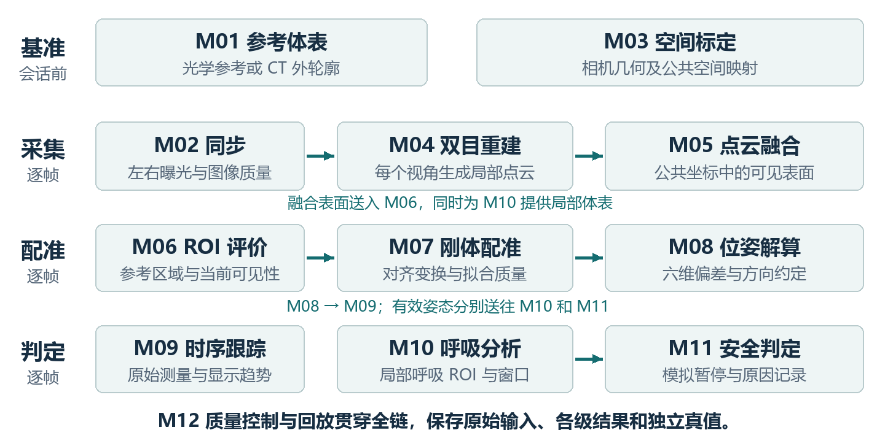
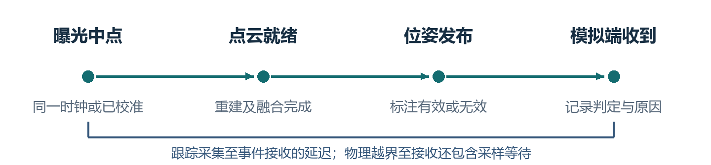
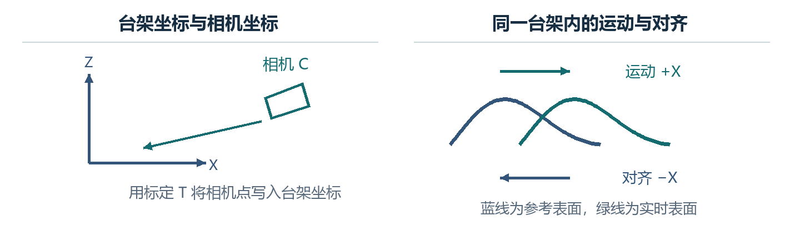
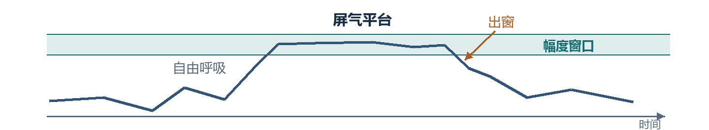

端到端算法架构

选择模块查看接口与验收要求。
把光学观察转换到公共坐标。
选择可靠的体表区域，估计运动。
判断信号有效性，记录模拟事件。

一路数据描述“应当比较哪块表面”，另一路描述“此刻看到了什么”。两路在 ROI 内相遇；只有坐标、时刻和版本都匹配，六维结果才有可解释的零点。
| 硬件或外部来源 | 送入软件的量 | 消费模块与产物 |
|---|---|---|
| 光学投影器与同步相机 | 左右图像、曝光中点、触发号、设备身份 | M02 配对；M04 产生每个视角的局部点云。 |
| 标定板、量具和非对称模体 | 板几何、独立检查点、台架零位 | M03 建立几何关系；M12 用独立点核对尺度与轴向。 |
| 深度相机或离线数据 | 带尺度、坐标和时间信息的现成点云 | P0/P1 可从 M05 或 M06 接入；此路径单独登记深度来源。 |
| 计划系统或光学基准采集 | CT 表面或光学参考、ROI、会话身份 | M01 产生版本化基准；M06/M07 做同一区域的表面对齐。 |
| 工作站与独立运动台 | 连续图像、台架编码器及外部时间信号 | M08–M10 产生运动与呼吸序列；编码器只供 M12 核验。 |
| 本地模拟接收端 | M11 状态、序号、暂停请求 | 回执进入 M12；模拟器无治疗设备连接。 |

每个结果携带 session_id、frame_id、capture_ns、clock_id、publish_ns、schema_version、reference_id、calibration_id、roi_id、validity 和 reason。采集前尚未绑定的字段可空；进入配准前必须完成绑定。时间以单调时钟记 ns，跨设备先估计时钟变换与误差。
实数数组声明形状、单位和坐标系；点云长度 N 可变。缺测时位姿字段取 null，并保留原始序号和失败原因。显示端留出趋势缺口，审计端仍能追踪这一帧。
配准求得的是把实时表面拉回参考位置的变换。要显示模体相对参考移动了多少，必须先统一坐标基底，再按约定求逆。

| 约定 | 研发接口定义 |
|---|---|
| 列向量与方向 | p_A = T_A_from_B · p_B。按行序列化 4×4 齐次矩阵。T_A_from_C = T_A_from_B · T_B_from_C。 |
| 公共空间 | 台架使用明确定义的右手系。光学参考与实时点均先转入该系。临床房间坐标还需要经独立验证的房间映射。 |
| CT 患者坐标 | 从 DICOM 方向、位置、像素间距和 Frame of Reference UID 恢复物理几何。计划等中心为计划所用坐标内的一点；必须验证到公共空间的变换。[8] |
| 偏差与对齐 | M07 给出 T_ref_from_live。M08 输出其逆 T_motion；台架用 mm 与度，注明旋转中心、轴序、设备约定版本。 |
| 可复算例 | 若参考点 x=12 mm，实时点 x=17 mm，纯平移时对齐量为 −5 mm，报告模体运动 +5 mm；其他五轴为零。 |
设中心 c=(10,0,0) mm，物体绕该点沿 +Z 右手旋转 90°，中心本身应保持不动。矩阵平移列是 c−Rc=(10,−10,0) mm，但在 c 处报告的位移 Rc+t−c 为零。这一例能同时检出中心补偿遗漏和矩阵方向混用。
M08 的台架轴名不直接沿用设备床轴。要显示临床轴名，需逐体位、逐床角验证正负方向及欧拉角奇异点；未经确认的约定保留原矩阵并给出状态。
用于研发工程师设计接口、技术负责人安排开发顺序、医学物理师设计模体验证。首个交付物是可离线回放的表面配准引擎：给它两幅体表和一个比较区域，它应能回答模体移动了多少，以及这次估计是否可信。
厂商公开 [1,2] Vision RT 描述了天花板相机单元的散斑投影、双传感器采集、三角测量，以及实时面与参考面的配准。其产品可报告六自由度偏差，并可在兼容配置下触发暂停。
项目假设 以下 M01–M12、SGBM、稳健 ICP、阶段指标和模拟状态均为本项目方案。厂商称其配准和标定采用专有方法；对应代价、质量权重和恢复逻辑尚无公开依据可供复现。[1]
医学物理边界 [3,4] 光学系统测量可见体表。内部靶区位置须按适用流程使用 CBCT、kV 等影像确认。本文只设计模体研究与模拟暂停，原型安全联锁不得直接连接治疗机。
查阅 M01–M12 的技术规格、开源依赖与模体验收方法。
参考表面决定屏幕上“零偏差”的含义。对模体，先拍一张位置已知的光学表面；对计划参考，还要知道体表在计划坐标中的位置。
| 接口 | 数据对象与关键字段 |
|---|---|
| 输入 | 光学点云 N×3 mm、基准姿态和确认记录；或 CT 序列、RTSTRUCT 的 External/BODY、计划等中心与坐标标识。 |
| 输出 | ReferenceSurface：vertices_mm[N,3]、faces[M,3]（可选）、reference_id、source、frame、ROI 版本、确认者与时间、T_room_from_ref。 |
光学路径取稳定的有效帧，记录模体夹具零位或临床 IGRT 确认时点。CT 路径核对切片位置、方向和间距，将已审核轮廓栅格化到物理空间，必要时分割外轮廓，再提取等值面。剔除固定装置与床面。
变更参考时生成新版本；保存源序列与计划关联。切换至新参考后重新初始化配准和跟踪，使新旧基线的趋势分段。
建议复用 pydicom（MIT 为主，私有字典另列 BSD 条款）； SimpleITK（Apache-2.0）； scikit-image（BSD-3-Clause 为主，逐文件有例外）； Open3D（MIT）
开源负责 DICOM 解析与几何运算。团队负责参考审批、坐标核对、版本切换、体位和会话绑定。
模体与时效检查 用已知尺寸非对称模体验证左右、尺度、表面到真值的有符号偏差。分别评价 CT 与光学路径。参考生成在会话前完成；首帧消费的版本须与已确认版本一致。
失效情形 把相机在错误摆位拍下的表面设零，之后即使显示零也会保留系统偏差。缺少计划到房间的已验证映射时，仅允许相对运动回放。
参考包中的表面、ROI 和会话可正常载入，再只替换计划 UID。在不改变点云的情况下，身份检查应拒绝错误参考；以此区分数据配对错误与几何误差。
运动中的物体在左右相机先后曝光时会出现在不同位置。图像清晰只说明单帧可读，两帧还要属于同一采样时刻。
| 接口 | 数据对象与关键字段 |
|---|---|
| 输入 | 左右图像 H×W（像素类型随设备声明）、相机序列号、硬件触发计数、曝光起止、主机单调时钟映射、投影状态。 |
| 输出 | StereoFrameBundle：pair_id、left/right、capture_ns[2]、skew_ns、clock_id、exposure_us[2]、calibration_id、quality 与丢帧计数。 |
按共同触发号和曝光中点配对，再检查尺寸、时差、饱和率、模糊度与重复帧。队列有长度和时效上限；无法配对的帧记原因后丢弃。
跨时钟域先测偏移与漂移。用运动上界 v 和允许的时序误差 e 估算时差预算 Δt ≤ e/v，再用可见闪光或编码器验证。
建议复用 OpenCV（Apache-2.0（≥4.5.0））
OpenCV 可完成图像处理、录像回放。硬件时间戳和触发通常通过厂商 SDK 获取，适配、缓存、时钟转换与异常诊断由团队负责。
模体与时效检查 测曝光中点时差的 P95 和最大值，报告有效配对率、丢帧率及采集到发布的等待时间。人为重复一帧、延迟一帧、断开一台相机，核对拒绝计数和原因。
失效情形 仅按主机到达时间配对，会把传输抖动误认为同步；长曝光或滚动快门还会引入帧内运动。无法测得时差时标记同步状态未知。
回放中保持左右图像内容不变，将右相机触发计数平移一帧。系统应报告配对失败，不能因图像相似而保留上一帧。
先量清两台相机彼此在哪里，再确定相机所见的一毫米在公共空间里对应哪一毫米。台架零点与辐射等中心须分别建立。
| 接口 | 数据对象与关键字段 |
|---|---|
| 输入 | 已知尺寸标定板、多姿态角点、相机分辨率、独立留出验证点、台架坐标；未来临床阶段另需独立测得的放射学等中心。 |
| 输出 | CalibrationSet：K[3,3]、D[k]、T_right_from_left[4,4]、T_room_from_cam[4,4]、有效体积、验证误差、标定版本与失效原因。 |
覆盖视场中心、边缘与多深度拟合内参和畸变；联合优化各相机外参以降低重投影误差。再以可测标记关联台架，保留独立检查体积。
固定一个坐标系消除整体平移、旋转的不确定性；分别记录拟合图像与验证点。未来由物理师以独立影像/模体检验光学中心对辐射中心的偏差。[1,3]
建议复用 OpenCV（Apache-2.0（≥4.5.0））； Ceres Solver（BSD-3-Clause 为主）
OpenCV 求基础几何，Ceres 可做联合最小二乘。团队承担采样覆盖、几何基准、独立验证、漂移策略与版本失效。
模体与时效检查 报告重投影误差（px）和留出点三维误差（mm）的分布、最大值和位置。离线标定另计时；每帧核对适用分辨率和版本。移动支架后测试能否拒用旧标定。
失效情形 同批角点的残差很小仍可能存在尺度偏差。采用另一件有计量记录的量具或模体，覆盖视场边缘，避免用参与拟合的点作独立真值。
用已知尺寸的非对称物件置于中心与边缘。若两处重投影均良好但边缘的独立三维误差增大，应缩小声明的有效体积或重做标定。
同一个散斑在两张校正图像中的水平位置不同。这个差值称为视差，相机用它估算表面沿光轴的深度。[1,6]
| 接口 | 数据对象与关键字段 |
|---|---|
| 输入 | 有效 StereoFrameBundle、K/D、双目外参、匹配搜索范围、有效视场与掩膜。 |
| 输出 | LocalPointCloud：xyz_mm[N,3]、normals[N,3]、confidence[N]、source_pixel[N,2]；另存深度图、视差及 valid_mask[H,W]。 |
去畸变并极线校正；沿同一图像行寻找对应纹理。以 SGBM 为基线，检查左右一致性和唯一性，再三角测量。保留无效像素并为有效邻域计算法向。
理想校正且主点横坐标一致时 Z=fB/d。f、d 用 px，B 用 mm。相同视差误差在远处引起更大的深度误差，约为 |δZ|≈Z²|δd|/(fB)。
建议复用 OpenCV（Apache-2.0（≥4.5.0））； Open3D（MIT）
复用 OpenCV 的校正、匹配及重投影。团队负责主动纹理、反光与遮挡处理、置信度标定及适用距离。
模体与时效检查 用实测阶梯块跨距离、角度与材质取样。分开报告轴向偏差、绝对误差 P95 和有效面积占比；记录每帧重建耗时 P95。关闭投影，验证弱纹理处能正确失效。
失效情形 视差定点编码或基线单位错会整体缩放点云。以已知高度台阶检验前后顺序和尺度，禁止将插补区域当有效测量。
示例 f=1000 px、B=100 mm、d=50 px，得到 Z=2000 mm。以同一单位手算一对点，再对照程序输出；该例只校验公式和单位。
各视角像从不同角度拍的照片。先把点云移到同一坐标系、对齐时间，再判断重叠处能否代表同一块表面。
| 接口 | 数据对象与关键字段 |
|---|---|
| 输入 | 各组 LocalPointCloud、对应采集时间、点级置信度、外参、可见区域与源相机标识。 |
| 输出 | LiveSurface：xyz_room_mm[N,3]、normals、source_mask、valid_mask、coverage_by_view、overlap_disagreement_mm、capture_ns。 |
同一采样窗口内，把各组点云变换到公共系；剔除无效点，按空间体素分组。重叠区在一致性通过后才按质量加权，冲突点保留分歧标记。
单视角通过同一接口发布并标明来源；多视角增加重叠残差、可见面积及单视角失效判断。有效几何不足时将状态传给 M06。
建议复用 Open3D（MIT）
Open3D 负责点云变换、空间索引、体素化。团队决定时间窗口、点权重、冲突阈值和视角退出策略。
模体与时效检查 用重叠视场中的静止斜面和运动台阶测接缝距离 P95、融合覆盖率；记录各视角到齐等待和融合耗时。遮掉一个视角后，来源掩膜须随之改变。
失效情形 错标定的两张表面做平均会得到一张平滑的错误表面。超过一致性预算时输出冲突区域，以独立模体检查漂移。
同一块台阶在两视角的高度一致时可融合。人为在一个视角外参加入偏移后，重叠分歧应上升；检查是否保留视角来源供定位。
同样数量的点，取在平板上与取在有起伏的模体上，可判断的运动方向不同。ROI 同时定义“比较哪里”和“还能相信哪些方向”。[3]
| 接口 | 数据对象与关键字段 |
|---|---|
| 输入 | 带三角面的参考表面、参考 ROI 面索引或顶点权重、实时点云和可见性、可信初值及其时效。 |
| 输出 | RoiObservation：roi_id、ref_faces、live_indices、area_visible_ratio、quality_mask、geometry_score、status 与 reason。 |
在参考面上圈定稳定区域，扣除遮挡、衣物或活动组织；按初值寻找实时对应，按参考面面积加权统计覆盖。重新捕获时使用独立粗初始化。
比较多方向法向量及刚体微扰雅可比矩阵的奇异值。以约定的特征长度归一化旋转与平移，再比较退化指标；具体阈值由留出模体数据确定。
建议复用 Open3D（MIT）； SciPy（BSD-3-Clause）
Open3D 提供法向、裁剪和近邻。团队负责 ROI 版本、可见面积分母、几何评价及不同应用部位的规则。
模体与时效检查 固定分母为已选参考 ROI 面积，报告可见面积/分母。逐步遮挡曲面并另测平板的切向移动，记录各轴真值误差、拒绝率和逐帧耗时。
失效情形 对称表面可能出现多个同样好的对应。即使覆盖率很高，也须标出退化或拒绝输出全六维；ROI 改动后重新评估。
设置平面与带凸起的两个等面积 ROI，施加相同切向位移。两组都可有高覆盖；只有对该方向有足够约束的测量才可接受。
把实时表面想象成一张能整体移动的硬壳。配准在选定区域里移动这张壳，使它贴近参考表面，同时降低局部变形点的影响。[7]
| 接口 | 数据对象与关键字段 |
|---|---|
| 输入 | 有效参考/实时 ROI 点、参考法向、点权重、同一公共坐标下的初值；跟踪时可用未过期的上一可信姿态。 |
| 输出 | RegistrationResult：T_ref_from_live[4,4]、residual_p95_mm、inlier_ratio、overlap、observability、iterations、status。 |
从粗到细下采样，匹配最近邻，以距离与法向夹角剔除异常对应；迭代更新刚体旋转和平移。超迭代或超时退出，复核重叠率、稳健残差和几何约束。
点到平面残差 rᵢ=nᵢ·(Rpᵢ+t−qᵢ)。pᵢ 是实时点，qᵢ 是参考点；沿参考法向 nᵢ 测距离。用稳健损失减弱离群对应的影响。
Open3D 提供点到平面 ICP 与稳健核。团队负责初始化范围、尺度层级、失锁重定位和误配拒绝。商业配准目标函数未公开。[1]
模体与时效检查 对已知台架与留出组合位姿测平移、旋转误差，记录错误接受、错误拒绝和耗时 P95。初值超出捕获范围或平面对称时，测试是否给出失败原因。
失效情形 误配可能同时表现为已收敛和低残差。独立真值衡量位姿误差，另记录失败案例及失效率，避免只在成功样本上评价。
同一次模体向右移动，患者运动方向和数学对齐方向恰好相反。本模块让每个数字都能回答“谁相对谁、绕哪个点”。
| 接口 | 数据对象与关键字段 |
|---|---|
| 输入 | 有效 T_ref_from_live、公共坐标基、旋转中心 c[3]、轴向与角序约定 convention_id、基准和当前床几何（适用时）。 |
| 输出 | Pose6D：delta_at_center_mm[3]、angles_deg[3]、T_motion[4,4]、center_mm[3]、convention_id、status。 |
验证 RᵀR≈I、det(R)≈+1 与齐次末行。对已在同一基底表达的配准变换求逆得到参考到当前的运动；按定义计算中心位移和欧拉角。
对运动 T=(R,t)，c 点位移为 Rc+t−c。内部保留旋转矩阵；研发台架示例采用 R=Rz(γ)Ry(β)Rx(α)，右手主动旋转、列向量，最右项先作用。
建议复用 SciPy（BSD-3-Clause）
SciPy 可作独立旋转运算对照。团队负责设备轴、体位、床角与 LAT/LNG/VRT、Pitch/Roll/Yaw 的映射表、角度奇异标志和显示语义。
模体与时效检查 测试六个轴的正负方向、非零中心、复合旋转、逆变换和近奇异姿态；与手算或独立程序核对。逐帧记录发布耗时及非法矩阵拒绝数。
失效情形 直接读出 4×4 矩阵最后一列，在旋转中心偏离原点时会给错位移。未验证设备约定时只显示台架轴，禁止把偏差作为移床指令。
将第 3 页绕偏心点旋转的例子写成测试，断言中心位移为零，同时保留矩阵非零平移列。随后将角度从度误作弧度，验证交叉测试能捕获错误。
连续比较每次有效测量，并在缺测处保留空白。平滑显示有助于读趋势，但快速运动必须能及时出现在原始判定链上。
| 接口 | 数据对象与关键字段 |
|---|---|
| 输入 | 带采集时间的 Pose6D 与配准质量、时钟域、参考版本、上一可信状态及最大数据年龄配置。 |
| 输出 | TrackingState：raw_pose、display_pose、age_ms、velocity、capture_ns、publish_ns、tracking_status、gap_reason。 |
按采集时序核对序号、版本与年龄；对有效测量估算速度，按旋转群处理姿态连续性。显示支路可平滑，判定支路消费带质量的原始测量。
大跳变触发低延迟异常标记和复核，勿静默平滑掉真实运动。超时、断流、换参考后失锁，重新捕获和验证后再恢复有效输出。
建议复用 SciPy（BSD-3-Clause）
SciPy 支持旋转与离线滤波对照。时间对齐、失锁恢复、原始/显示两支路和时效策略需自研。
模体与时效检查 让动态模体经历阶跃、匀速和停顿；测静止抖动、阶跃响应、长时漂移及有效更新率。注入停帧，超时须在约定的看门狗周期内报出并记录实测延迟。
失效情形 预测值可能在遮挡后仍很平滑。缺测时原始位姿置空、趋势断线，并向 M11 发布无效原因；预测只供诊断。
在静止段后引入阶跃，分别记录原始测量与平滑显示首次越界的时间。模拟判定的输入记录应能追溯至原始测量。
胸腹部局部起伏与整体平移可能同时发生。分别估计稳定区域的刚体运动和呼吸 ROI 的局部位移，才有条件解释呼吸曲线。
| 接口 | 数据对象与关键字段 |
|---|---|
| 输入 | 呼吸 ROI 点云、时间戳、稳定区域运动估计、基线、窗口上下限（mm）、滞回/驻留时间配置与有效性。 |
| 输出 | RespirationState：signed_mm、baseline_id、phase_optional、hold_state、window_state、quality、capture_ns。 |
将呼吸 ROI 对齐到参考坐标，以法向有符号位移的稳健统计量生成波形。用可识别的自由呼吸区间估计周期；DIBH 采用幅度窗口、平台稳定性和驻留规则。
退出窗口及信号无效分别编码；记录滤波和驻留的附加延迟。屏气平台上或不规则呼吸时，相位可空。全局姿态仍须独立合格。

建议复用 SciPy（BSD-3-Clause）； Open3D（MIT）
SciPy 支持信号处理，Open3D 做表面采样。团队负责基线更新、全局/局部解耦、窗口配置、失效降级和模拟事件。
模体与时效检查 用独立编码器波形测试幅度偏差、入窗和出窗延迟 P95/最大值；加入基线漂移、整体移动与遮挡。按事件统计漏报和误报，记录每次出窗的时刻。
失效情形 呼吸 ROI 与刚体 ROI 高度重叠可能把呼吸信号拟合掉。含局部形变的模体可检出这种串扰；内部靶区运动需另行验证。[3,4]
把每次判断和原因发送给本地模拟器，供操作者回放“系统何时发现超限”。原型联锁不连接治疗机，不发送出束、停束或移床命令。
| 接口 | 数据对象与关键字段 |
|---|---|
| 输入 | 原始位姿、ROI/QC、呼吸有效性（按模式）、采集年龄、参考和标定版本、上下文、模拟设备状态及配置版本。 |
| 输出 | GateDecision：state、reason_codes[]、sequence、capture_ns、decision_ns、config_id、sim_hold_requested。NORMAL 只表示本次监测条件满足。 |
先检查身份/版本、时效与几何质量，无效输出 INVALID；有效超限或呼吸出窗输出 HOLD_REQUIRED。WARNING 表示经配置的非阻断提示，NORMAL 表示监测正常。
启动、断链或重启进入 INVALID。INVALID 与 HOLD_REQUIRED 均触发模拟暂停；重新获得有效测量后，还须满足恢复条件及模拟确认，不能由心跳单独复位。
建议复用 pytest（MIT）
状态判断、原因优先级、看门狗、恢复策略和接口隔离由团队负责；pytest 只用于自动化测试。研究程序不包含治疗设备驱动。
模体与时效检查 用状态转移表回放断帧、错参考、越界、重启、重复序号和超时。逐事件核对预期结果；记录物理事件到模拟端收到暂停请求的 P95 与最大延迟。
失效情形 若程序停止且不再发事件，模拟端须依靠自己的超时检测进入暂停。模拟接收时刻不能推断真实射束停止时刻。
在合格姿态下切断事件流，让模拟端独立超时；随后只恢复心跳。模拟暂停应保持，直至新的有效测量和规定的恢复确认到齐。
用独立标尺回答三个问题：实际移动了多少、系统报告了多少、何时报告。每次软件或硬件变更都应能重放同一组失败样例。
| 接口 | 数据对象与关键字段 |
|---|---|
| 输入 | 原始帧、基准面、配置与标定快照、中间结果、模拟事件、独立真值轨迹、真值不确定度和时钟对齐记录。 |
| 输出 | QCReport：case_id、truth_id、input_hash、versions、condition、metrics、counts、threshold_version、outcome 与失败样例定位。 |
冻结案例、采样条件和评价脚本；将真值与被测算法分开，按时间对齐。按姿态、工作距离、遮挡和 ROI 分层汇总，再逐版本比较成功和失败分布。
同时记录原始帧数、有效输出数、被拒帧数与原因。把质量不足、门槛未批准和测得超限分别记录为不可判定、待评审和失败。
建议复用 pytest（MIT）； SciPy（BSD-3-Clause）
pytest 编排行为测试，SciPy 作独立数值交叉检验。团队负责真值采集和计量、场景冻结、回放格式、审计完整性及判定规则。
模体与时效检查 用已知输入重放两次，比对状态序列和限定容差内的数值。报告独立真值误差及时间不确定度；在有/无录制两种模式实测延迟，验证日志不中断判断链。
失效情形 同一模型生成输入和真值会掩盖共同错误。数学合成、实物几何和动态时间三类证据分别归档；记录失败条件、复现入口与责任人。
冻结一例真实或构造的失败样本，再修改算法版本。报告同时列出旧版与新版的状态、连续误差和输入摘要，可追踪“拒绝”是否被错误改成“有效”。
从基础库到团队自研边界，按 P0–P4 的验证证据推进。
优先复用已知的数学运算；团队负责定义它们在什么输入条件下有效、何时拒绝结果，以及怎样用独立真值证明判断正确。软件名称可点开查看项目，许可条款入口列在下表后。
| 模块 | 复用内容 | 团队交付 | 最早阶段 |
|---|---|---|---|
| M01 | pydicom、SimpleITK、scikit-image / Open3D | 参考身份、坐标关联与版本审批 | P0 光学 |
| M02 | OpenCV 与设备 SDK | 同步、时钟域、过期帧拒绝 | P1 |
| M03 | OpenCV、Ceres Solver | 多视角基准、独立标定检查 | P1 → P2 |
| M04 | OpenCV、Open3D | 主动纹理、可信匹配、深度 QC | P2 |
| M05 | Open3D | 跨视角时间和重叠冲突判定 | P1 → P2 |
| M06 | Open3D、SciPy | ROI 可见性、几何退化判定 | P0 |
| M07 | Open3D；SpyGRT 用作对照 | 配准编排、误配检测、重定位 | P0 |
| M08 | SciPy 旋转运算 | 坐标语义、旋转中心与方向验证 | P0 |
| M09 | SciPy 离线对照 | 动态有效性、失锁恢复与时效 | P1 |
| M10 | SciPy、Open3D | 呼吸 ROI、漂移与窗口判定 | P3 |
| M11 | pytest 测试工具 | 判定与恢复逻辑、模拟端超时 | P3 |
| M12 | pytest、SciPy | 独立真值、回放和版本回归 | P0 起 |
pydicom / SimpleITK / scikit-image / Open3D / OpenCV / Ceres Solver / SciPy / SpyGRT / pytest
项目主许可证适用于相应代码范围。发布前固定标签或提交号，登记实际启用的可选求解器、图像编解码器、二进制包和随包数据；厂商 SDK 按其单独授权核对。SpyGRT 可用于研究对照，论文结果对应其具体设备和试验条件。[5]
把“配准算得对吗”放在“相机能否实时采到”之前验证。阶段按证据推进；P0–P4 是开发顺序，未给出项目工期承诺。
| 阶段 | 交付物与依赖 | 进入下一阶段的证据 |
|---|---|---|
| P0 离线配准 | 算法包 A：M01 光学参考、M06 ROI、M07 配准、M08 位姿、M12 回放。输入两组三维表面，可绕开相机。 | 用已知刚体变换验证数学与符号；再用独立模体检查实体链。归档有效误差、被拒试次和错误接受。 |
| P1 实时原型 | 算法包 B 的入口：M02、M03、M05 与 M09。可从一台深度相机或已有同步双目点云开始，接入工作站。 | 随台架运动记录误差、延迟和丢帧；断流、遮挡、过期数据应产生可回放的无效记录。 |
| P2 自主双目 | 完善算法包 B：加入 M04。先验证一组同步双目与主动纹理，再增加视角和 M03/M05 的联合标定与融合。 | 在独立量具上交付距离、材质、视角和覆盖分层结果。评估多视角互扰、几何错层及退出机制。 |
| P3 呼吸模拟 | 算法包 C：M09、M10、M11 与 M12。接入运动模体、独立编码器和本地模拟接收端。 | 同时报告出窗/恢复判定、误报漏报和物理事件到模拟接收的延迟；全部失效用例均有预期状态。 |
| P4 验证准备 | 医学物理师参与设计计划参考与独立影像验证、设备 QA 和变更回归。正式设备集成为后续独立工作。 | 归档适用范围、风险追溯和独立评审。原型验收始终在模拟端结束，临床使用需另行评估。[3,4,9] |
P0 原稿提出平移 ≤1 mm、旋转 ≤0.5°；P2 将 ≤0.5 mm、≤0.2° 作为限定条件下的探索目标。两组数字均待评审，尚无本项目达标证据，也不作为患者门控窗口。
建议预先约定：在各指定工作条件中，逐试次计算指定中心的三维位移误差范数和整体旋转角误差，分别取 P95 与候选数字比较，同时报告最坏值、有效率及错误接受。先冻结统计口径、样本量和真值不确定度，再采集用于验收的数据。
在独立真值上评价几何误差、动态延迟和无效状态。
选择采样时刻，查看原始位姿、判定原因与模拟暂停状态。
验收记录应能说明哪台量具提供真值、在哪个中心计算误差、从哪个物理事件开始计时，以及失效帧如何计入分母。以下是试验设计，未填入实测成绩。
| 试验与真值 | 采样条件 | 判读与记录 |
|---|---|---|
| 静态几何 独立量具或计量模体 | 原点、边缘、近/远距离、不同入射角；拟合用点与留出点分开。 | 记录轴向偏差、三维误差、P95/最大值、有效面积、量具不确定度与漂移。 |
| 刚体运动 独立六维夹具或转台加滑台 | 六轴正负、组合旋转、偏心旋转、不同初值；同一姿态重复采集。 | Δp 为同一中心和坐标下两测量之差；角误差为 R真ᵀR估 的旋转角。列出每轴有符号偏差与有效率。 |
| 动态链路 编码器与共同时间基准 | 匀速、突变、呼吸平台、出窗、断流；分别记录原始测量、发布和模拟回执。 | 相机帧率、有效位姿更新率与端到端延迟分报；延迟至少报中位数、P95、最大值及漏检事件数。 |
| 质量判定 有真值的遮挡与故障注入 | 平坦 ROI、错参考、左右图互换、部分遮挡、停帧、重启及看门狗超时。 | 针对故障预先写明预期状态、原因、处置时限。统计错误有效和错误拒绝；未检出事件计漏报。 |
有效率 = 有效位姿数 / 应评价的采样时刻数。分别记录未采集、无效和已发布数值的样本。误报用次数/小时或正常事件数作分母；漏报用未触发的真实超限事件数/真实超限事件总数。预先冻结事件匹配窗。
示例预算：若台架速度上界为 20 mm/s，分给左右曝光不同步的误差为 0.2 mm，则时差预算为 10 ms。此数仅演示 M02 的预算推导；端到端时限需独立确定，不能由帧率换算。
无已批准门槛则给出测量与“待评审”。指南中的 commissioning 与周期 QA 建议需结合用途、设备与场地解释；本报告不将其直接移作原型或患者治疗限值。[3,4,9]
下面是构造的接口用例。监测对象是一件刚性模体，参考为台架零位的光学表面；模拟端以序号和接收时刻记录暂停请求。
| 输入情形 | 算法输出 | 显示与模拟端预期 |
|---|---|---|
| 帧 41：模体位于参考位，ROI 完整 | M07 有效，M08 位移与旋转为零，M09 原始测量有效。 | 显示六轴零值；在全部已配置条件满足时，M11 可记录 NORMAL。 |
| 帧 42：遮挡物盖住 ROI | M06 输出 ROI_INVALID；M07/M08 无有效变换，pose=null。 | 六项显示缺测，趋势留空；M11 记录 INVALID 和原因，模拟端收到暂停请求。 |
| 帧 43：摄像头心跳仍在，图像停止更新 | 采集序号不前进，年龄超过预算；未产生新鲜位姿。 | 模拟端继续暂停；保存超时或重复序号，禁止沿用帧 41 的零值。 |
| 帧 44 起：移除遮挡，重新捕获 | 重新验证参考、标定、几何质量及稳定期，建立新的有效序列。 | 恢复按已配置确认规则执行；历史缺口保留。恢复事件不生成真实控制动作。 |
会话清单包含模体与夹具标识、参考/标定/ROI/配置版本、代码版本、相机和投影设置；原始帧与中间点云按 frame_id 关联。事件另记采集时刻、判定时刻、模拟接收时刻、原因和确认来源。
算法工程师 从同一帧重建点云、配准结果和拒绝原因，核对数组、掩膜和坐标版本。
技术负责人 检查软硬件版本和测试覆盖，组织评审并确认本阶段的统计门槛与资源预算；如条件变化，重新建立基线。
医学物理师 确认参考建立时点、独立真值和试验边界，区分台架零位、计划等中心和辐射等中心。
核查厂商公开信息、医学物理指南和开源实现的依据。
| 术语 | 在本设计中的含义 |
|---|---|
| SGRT / IGRT | SGRT 用可见体表辅助摆位与运动监测。本文的内部靶区 IGRT 指通过适用的放射影像等手段确认内部解剖；两者观察对象不同。 |
| 参考体表 / 实时体表 | 前者给出比较基准，后者是当前测量。重设参考会改变“零”的含义，须记录时点和版本。 |
| CT / RTSTRUCT / TPS | CT 提供计划影像；RTSTRUCT 可含外轮廓；TPS 为治疗计划系统。本设计只取计划外表面和空间信息，不进行 CT–MRI 体数据配准。 |
| 点云 / 法向 | 点云由具有三维坐标的采样点构成；法向描述局部表面的垂直方向，用于评估匹配和点到平面距离。 |
| ROI / 可观测性 | ROI 为选作比较的体表区域。可观测性描述该区域的形状和覆盖能否区分各方向的运动。 |
| ICP / 残差 | 迭代最近点法反复寻找对应并更新刚体变换。残差衡量对应点的拟合程度，定位误差要与独立真值比较。 |
| 6DoF / SE(3) | 六自由度为三平移加三旋转。SE(3) 表示三维刚体运动；6 个显示分量还依赖旋转中心、坐标基和角序。 |
| 等中心 | 治疗设备的几何或辐射参考中心。台架原点、计划等中心和实测辐射等中心需分别标识。 |
| DIBH / 门控窗口 | 深吸气屏气。窗口描述所选体表代理信号可接受的范围，模拟逻辑还检查信号质量与整体姿态。 |
| QA / QC | QA 为质量保证，包含建立与维护质量流程；QC 为具体质量检查，例如标定漂移测试与逐帧有效性检查。 |
| P95 / 数据年龄 | P95 为第 95 百分位数。数据年龄为当前时刻减采集时刻；不同设备的时间戳须先关联到同一时间基准。 |
| Commissioning | 针对指定系统、场地和用途，系统确认性能、适用范围与工作流程。原型台架测试只提供研发证据。 |
厂商资料用于核对产品公开技术方向，指南用于设计质量验证，软件文档用于定位可复用的算法。以下题名或来源链接可直接打开；开源仓库和许可证另见各模块及选型矩阵。
[1] Vision RT. Our SGRT Technology. Stereo Photogrammetry、Surface Registration、Calibration 三节。核对散斑、三角测量、专有配准以及 ACO、平板和 MV 立方体标定的公开用途。
[2] Vision RT. AlignRT. 厂商产品页面。核对六自由度监测和商业系统暂停功能；产品陈述限于其说明的系统。
[3] Al-Hallaq HA et al. AAPM task group report 302: Surface-guided radiotherapy. Medical Physics, 2022. 表 4–6 与参考表面、ROI 及临床工作流程章节。用于设计模体几何、动态与端到端验证。
[4] Freislederer P et al. ESTRO-ACROP guideline on surface guided radiation therapy. Radiotherapy and Oncology, 2022;173:188–196. 临床实施、角色与质量保证的指南背景。
[5] Ben Bouchta Y et al. The Remove-the-Mask Open-Source head and neck Surface-Guided radiation therapy system. Physics and Imaging in Radiation Oncology, 2024. DOI 10.1016/j.phro.2024.100541。对照深度相机研究原型与 SpyGRT 的实现范围。
[6] OpenCV. Camera Calibration and 3D Reconstruction. 双目标定、极线校正、视差重投影与三角测量接口。
[7] Open3D. Robust kernels. 稳健核与点到平面 ICP 的公开实现。
[8] DICOM Standard, PS3.3, C.7.6.2, Image Plane Module. 核对 Image Position、Image Orientation 与 Pixel Spacing 的物理含义。
[9] Willoughby T et al. Quality assurance for nonradiographic radiotherapy localization and positioning systems: Report of Task Group 147. Medical Physics, 2012. 非放射定位系统 QA 框架，与 TG-302 的 SGRT 专项内容配合查阅。
编制依据：沿用《算法分析》对话所形成 V1.0 的模块编号、技术路线及阶段目标。本文中的图、接口示例和台架预算为研发解释与评审用途。